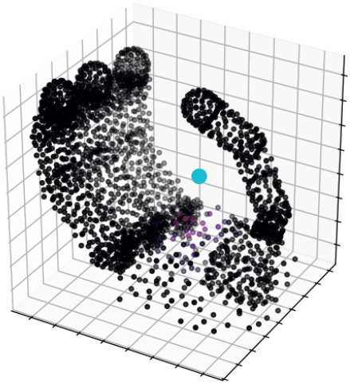
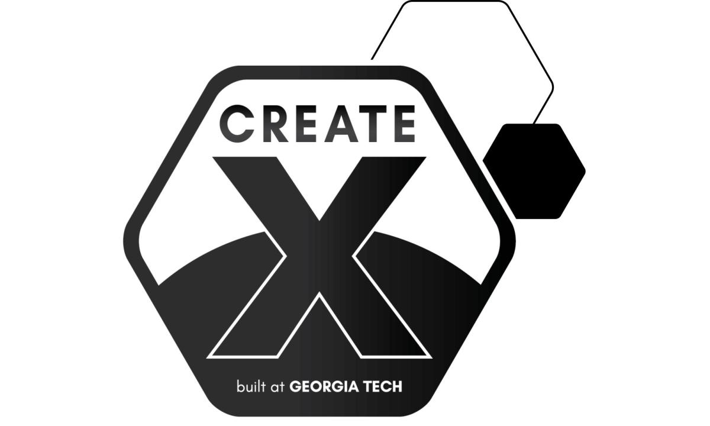

Tenace Labs Building in public
The intelligence layer for robots
We make machines
learn from the world.
World models, tactile foundation models, and sim-to-real policy transfer for robots that can sense, predict, and act.
Supported byGeorgia Tech CREATE-X LaunchAtlanta, GA · 2026

Current projects
04 / active
From contact
to capability.
01Policy transfer ↗
Dribble
Learning dexterous, contact-rich behavior across simulation and the real world.
02World models ↗
TacK-JEPA
Force-native tactile world models grounded in exact robot hand kinematics.
03Robotics systems ↗
Salty
Tools for building robust robot policies when the environment refuses to cooperate.
04Tactile models ↗
Tactility
Representations that turn raw tactile sensor data into something robots can learn from.
Open channel
Let’s build the
physical future.
For research collaborations, early access, or thoughtful conversations about physical intelligence.
amoghshri1601@gmail.com ↗